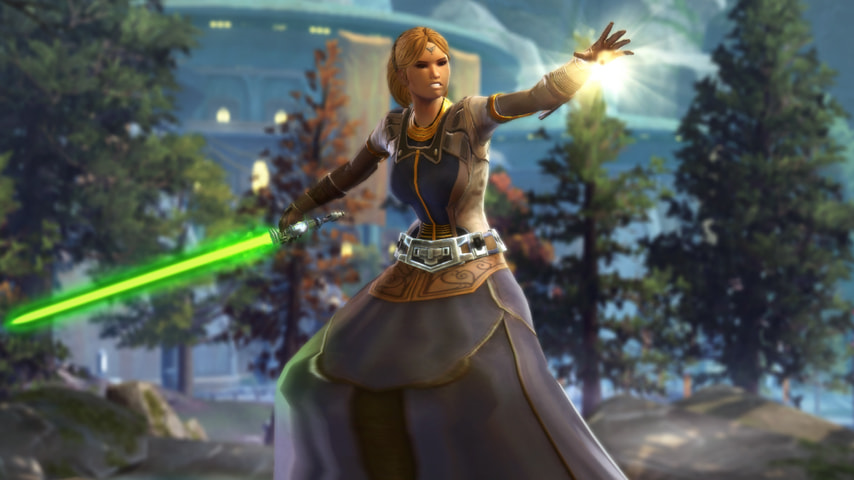
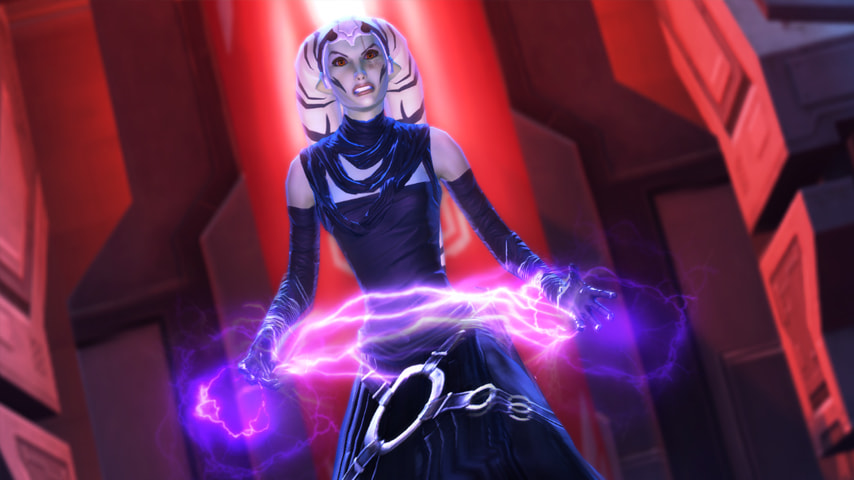

There is serenity in balance, and no one knows this better than the Balance Sage.
Able to assail multiple targets at once while at the same time absorbing their vitality,
the Balance Sage is a formidable presence in long-range engagements.
Delving ever deeper into the dark side of the Force can lead to madness, but it can also lead to immense power. Attacking multiple enemies simultaneously and instilling terror in their hearts, all while sapping their very life essence from afar, the Madness Sorcerer is a dark threat unlike any other.
Balance Sage PvE Guide 5.7
 
A class guide for Star Wars: Knights of the Old Republic. Updated .
This is a template, NOT the published guide;
Here are the live pub guide / imp guide.
Balance Sage: Overview
Madness Sorcerer: Overview
- Lighted robed, lightsaber wielding, seeks wisdom and allies over action.
- Story highlights: Recover artifacts, visit kotor characters, form alliances and armies as a Jedi Master, join the Jedi Council, make a holocron.
- Story highlights: Learn rituals, gather Sith ghosts, war a Darth and take his Dark Council seat.
- Spec: Ranged DoT, Jedi (Force-user), off-heal.
- Pros: Mobility, AoE, self heal, team support.
- Cons: Few defences, lack of burst.
- Stay in middle or back of group. Stay back and close to cover once combat starts.
- Trash fights: start with Sever Force and/or Weaken Mind, then spread them with Force in Balance.
- Use Force in Balance and Force Serenity on cooldown. Spam Telekinetic Throw so that we can use Vanquish on cooldown too.
- "Off-heal" with Bubble, but keep it minimal in combat. Use Restoration to self-cleanse. Use Revival in-combat if necessary.
- Maintain self bubble, and use Force Mend to self heal. Force Speed and flee when hp drops fast. Binds Force Barrier to a easy key for desperate time.
- Suggested utilities: Pain Bearer, Tectonic Master, Telekinetic Defense, Valiance, Egress, Mental Defense, Force Mobility, and your choice.
- Resonant Pulse of Force in Balance hits only the triggering target, won't spraed out.
- Force Quake does not benefit from 10% Force cost reduction of level 15 passive.
- Phase Walk will disengage if we use it while hindered.
- Excels at kiting and long fights, arguably the hardest Sage discipline.
- Stable rotation, zero proc dependency, very reliable relic proc.
- Self-heals grant great stamina in long fights, often the last one standing in a full wipe.
- Few defensives, either low mitigation and/or on long cooldown. Difficult to survive burst damage.
- Telekinetic is Sage's burst DPS spec, very mobile, crazy burst window. Perfect for leveling.
- Seer is Sage's heal spec, very versatile and efficient, the most mobile heal spec.
- Balance has the most subtle animations of all classes and disciplines. If you prefer a low profile, there is no better class.
- Finishing chapter 3 of the Sith Inquistor story unlocks Lightening Storm as a legacy ability.
- Imperial counterpart: Madness Sorcerer.
- Republic counterpart: Balance Sage.
Rotations
The Very Simple Rotation
- Vanquish (Pre-cast/instant)
- Sever Force
- Weaken Mind
- Force in Balance (Spread DoT)
- Force Serenity
- Telekinetic Throw (Full cast)
- Disturbance
- Telekinetic Throw (Full cast)
- Telekinetic Throw (Clipped, throw vanquish asap)
- Repeat
- We can move around during steps 1 to 4 and maybe 5; find a safe place to throw skittles.
- If rotation can't keep up with Vanquish's cooldown, skip the last Telekinetic Throw.
Expanded Rotation
- (Open) (If mid-fight & Vanquish not primed) Telekinetic Throw
- (Off) Mental Alacrity
- Vanquish / Mind Crush (Pre-cast/instant)
- Sever Force
- Weaken Mind
- (Off) Force Potency
- Force in Balance (Spread DoTs at lv. 28+)
- (Off) Force Mend
- Force Serenity (Project before lv. 40)
- Telekinetic Throw (Full cast)
- Disturbance (Instant) or filler
- (Off) Cloud Mind
- Telekinetic Throw (Full cast)
- Telekinetic Throw (Clipped; skip before lv 56.) or filler
- Next rotation.
- Multiple Telekinetic Throw is required to maintain its buffs, but is not a high priority.
- Off-GCD buffs are best used during GCD, after instant abilities, to maximise APM.
- Using Mental Alacrity before Vanquish allow us to maintain the same rotation.
AoE Rotation
- Sever Force or Weaken Mind
- Weaken Mind or Sever Force
- Force in Balance (DoT spread)
- (Off) Force Potency
- Force Quake
- Force Quake
- Telekinetic Throw
- Vanquish
- Next rotation
- See each DoT for tips to judge which one to put first.
- Against weak trashes, skipping the second DoT may finish them off faster.
- Force in Balance with any DoT deals higher damage than a full Force Quake.
- Except when Force Quake is used after Force Potency, which turns all hits into autocrit.
- The rotation is 1 second shorter than cooldown because I have difficulty chaining Force Quake head to tail. Add a clipped Telekinetic Throw if your ping is better than mine.
- Rotation is Force negative. Replace Vanquish with Telekinetic Throw to lessen it.
- Consider opening with Force Push to push opponents together, then run into them for AoE.
Abilities
Main Attacks
- Dealing damage is our main job.
- Basic Attack: Telekinetic Throw (regen Force).
- Use on cooldown: Vanquish, Force in Balance, Force Serenity.
- Never hardcast Vanquish except to start a fight.
Telekinetic Throw
- Level 2: Deals 9k kinetic damage and regain 12 Force over 2.1 sec. channel. During channel it immobilizes weak and standard target, otherwise slows target's movement by 50%.
- 2.1 sec. channel (four ticks), no cooldown, range 30m, regen 28 Force.
- Force-Master 4-pieces: Reduces Force cost of Telekinetic Throw ticks by 2.
- Level 24 passive: When Telekinetic Throw deals damage 4 times, your next Disturbance, Mind Crush, or Vanquish activates instantly, costs 50% less Force, and deals 25% more damage, for up to 15 sec.
- Level 40 passive: Each Telekinetic Throw damage has a 20% chance to triggers Rippling Force, dealing 1k kinetic damage to the target and restore 2 Force.
- Level 64 passive: Telekinetic Throw hits increase your periodic damages by 2%, stack up to 4 times and last 10 sec.
- (Merged) Level 12 passive: Telekinetic Throw now has no cooldown.
- (Merged) Level 16 passive: Eliminate Telekinetic Throw pushback, and recover 2% Force (12) when it deals damage.
- (Merged) Level 56 passive: Telekinetic Throw ticks 33% faster (from 3s to 2.1s) but deals 25% less damage.
- A no-cooldown, Force positive basic attack that we should use a lot.
- 4 hits (a full channel) make next Vanquish and Disturbance instant cast and do higher damage, and primed Vanquish is our main attack.
- Does require us to stand still and is the biggest hinderance to our mobility.
- When we can stay still and big powers are on CD; keep Vanquish primed!
- Slows a moving foe, whether it is chasing the tank or us.
- Finish off near death trash mobs and adds.
- Ticks immediately and then twice per second, 4 ticks total.
- Hits does not need to be continuous for the buffs; can run, hit twice, run, hit twice.
- We don't get buffs if we fail to deal damage, such as because of accuracy or immunity.
- One Force Potency applies to all four ticks. A decent use of Force Potency on single target.
- Telekinetic Throw has high damage on paper, but Force in Balance and Force Serenity deals internal damage and are normally better Force Potency candidates.
- Originally cost 36 Force per channel, or 9 per tick. We recover 12 per hit, a net balance of 3 Force per tick. Natural Force regen also adds 16 over the channel, while set bonus adds 8.
- Rippling Force adds around 10% damage.
Vanquish (Mind Crush)
- Level 58: Casts and deals 5k kinetic damage, plus 16k kinetic damage over 9 sec. and redistributes 10% of the damage to heal you. The target is Vulnerable for 45 seconds, taking 5% more damage from Force attacks. Replaces Mind Crush.
- Level 14 Mind Crush: Casts and deals XXX kinetic damage, plus XXX kinetic damage over 9 sec. and redistributes 10% of the damage to heal you.
- 2s casted, 15s cooldown, range 30m, 27 Force.
- Level 36 passive: Increase periodic damage by 10%.
- Level 48 passive: Increase periodic damage by 15% on targets below 30% max health.
- (Merged) Level 44 passive: Mind Crush and Vanquish lasts 3 sec longer (from 6 to 9).
- Our biggest attack, fair upfront (burst) damage, heaviest and quickest tick.
- Always use after primed by Throw. 25% damage on our biggest attack.
- Make target vulnerable 5% to Force damage, which is virtually all our attacks.
- Hardcast to start a combat. This is an exception to no hardcast rule.
- Use on cooldown. Telekinetic Throw often and reserve the buff for Vanquish.
- Ticks once per seconds for 9 seconds, 9 ticks total after upfront damage.
- Upfront damage is not DoT tick and does not enjoy DoT buffs.
- In-game hint is bugged and does not take into account level 44 passives's bonus duration.
Sever Force
- Level 26: Immobilizes the target for 2 sec. (once per 9 sec.), plus deals 11k internal damage over 18 sec. and redistributes 10% of the damage to heal you.
- Instant, no cooldown, range 30m, 18 Force.
- Level 36 passive: Increase periodic damage by 10%.
- Level 48 passive: Increase periodic damage by 15% on targets below 30% max health.
- (Merged) Level 52 passive: Sever Force redistributes 10% of the damage to heal you.
- Long lasting DoT, spreadable by Force in Balance.
- Pin victim on a hidden cooldown of 9 seconds.
- Whenever the target is not going to fall in a few seconds or so.
- DoT spreading by Force in Balance or manually.
- To start a fight on a melee foes when its friends are ranged, so that they stay together for easy DoT spread.
- To prevent kiting opponent from closing or jumping on us.
- Ticks immediately and once per 3 seconds for 18 seconds, 7 ticks total.
- Deals internal (yellow) damage, which bypass many defences.
- Cost only half the Force of Weaken Mind, and should be preferred over it.
- Heals us 10% of the damage dealt (lv. 52+), very little even when spread.
Weaken Mind
- Level 16: Deals 10k internal damage over 18 sec., and redistributes 10% of the damage to heal you.
- Instant, no cooldown, range 30m, 32 Force.
- Utility: Confound
- Level 36 passive: Increase periodic damage by 10%.
- Level 48 passive: Increase periodic damage by 15% on targets below 30% max health.
- (Merged) Level 52 passive: Weaken Mind redistributes 10% of the damage to heal you.
- Long lasting DoT, spreadable by Force in Balance.
- Does not pin target, sometimes good for DoT spread.
- Victim takes great bonus damage from Force Serenity.
- Whenever the target is not going to fall in a few seconds or so.
- DoT spreading by Force in Balance or manually.
- To start a fight when all foes are melee, so that they zerg us as a group for easy DoT spread.
- Ticks immediately and once per 3 seconds for 18 seconds, 7 ticks total.
- Deals internal (yellow) damage, which bypass many defences.
- Double Force cost of Sever Force but slightly less damage.
- Heals us 10% of the damage dealt (lv. 52+), very little even when spread.
Force in Balance
- Level 10: Deals 7k internal damage to up to 8 targets in a 5m radius AoE, and redistribute 20% of the total damage to heal you.
- Instant (0.2 sec delay), 15 sec. cooldown, range 30m, 45 Force.
- Level 20 passive: Force in Balance increase the damage the target takes from your next 15 periodic damage for up to 30 sec.
- Level 28 passive: Force in Balance spread your Weaken Mind and Sever Force to damanged targets, if any damaged target is already affected by your Weaken Mind and Sever Force.
- Level 28 passive: Force in Balance cause targets to take 10% more damage from area attacks for 45 sec.
- Level 60 passive: Each time Force in Balance increases your periodic damage, you regain 2 Force.
- Level 68 passive: Targets hit by Force in Balance has 50% chance to emits a Resonant Pulse, dealing 750 internal damage to itself and up to 7 targets within 5m.
- (Merged) Level 52 passive: Increase Force in Balance's health redistribution from 10% to 20%.
- Biggest and instant AoE. Spread Sever Force and Weaken Mind.
- Put counted debuff on victims that boost DoT damage and refund Force.
- Also put a debuff that increases AoE damage taken.
- Spread Sever Force and/or Weaken Mind to every target if any target have them.
- Spread both DoTs if possible, but if the target is flimsy and will die before that, DoT(s) a different target or just fire Force in Balance as burst AoE (without any DoT).
- Use on cooldown. Group, Single, Bursting, Kiting, just cast it on CD.
- Except when a close group of adds are expected soon, in which case reserve this for them.
- Newly spread DoTs will have full duration, but existing DoTs won't be refreshed.
- Newly spread DoTs will immediately tick, adding to burst damage.
- Has a 0.2 sec delay between activation and effect, must manually aim and adjust for enemies' movements.
- Consumes multiple Force Potency when used on multiple targets. Not optimal but acceptable.
- Deals internal (yellow) damage, which bypass many defences.
- Currently Resonant Pulse only hits the triggering target, instead of bounding to other enemies, in effect a flat 5% damage bonus.
- Resonant Pulse also redistribute 10% of its damage to heal us, and I don't know whether it's part of Force in Balance's original 10% life drain or it is regarded as a DoT.
Force Serenity
- Level 42: Casts and deals 7k internal damage, and redistribute 100% of the damage to heal you.
- 1.5 sec. cast, 12 sec. cooldown, range 30m, 45 Force.
- Force-Master 2-pieces: Force Serenity increase damage dealt by 2% for 15 seconds. Cannot occur more than once every 30 seconds.
- Utility: Force Mobility
- Level 16 passive: Reduce Force Serenity pushback by 75%.
- Level 32 passive: Force Serenity critical chance +5%.
- Level 40 passive: Force Serenity has a 60% chance to triggers Rippling Force, dealing 1k kinetic damage to the target and restores 2 Force.
- Level 48 passive: Force Serenity restores 15 Force when used on target affected by Force in Balance's periodic damage bonus.
- Level 60 passive: Force Serenity deals 30% more damage on target affected by your Weaken Mind.
- (Merged) Level 52 passive: Increase Force Serenity's health redistribution from 50% to 100%.
- Biggest burst attack, also our main self-heal.
- 30% more damage (and heal) against weakened target.
- Force cost -15 when used after Force in Balance.
- Use on cooldown, after weaken mind and Force in Balance.
- Skip Force in Balance if it is on cooldown or on reserve.
- Telekinetic Throw instead if target is too weak to waste Weaken + Serenity.
- Best used of Force Potency because of high damage and heal.
- Heal us 100% of damage dealt. (50% before lv. 52) Which generates normal heal threat.
- Deals internal (yellow) damage, which bypass many defences.
- Damage is back-loaded; follow with front-loaded damage (Force in Balance/Project) to create a damage burst.
- Don't need to be used immediately after Force in Balance; the force cost discount depends on its counted DoT debuff, which takes at least 4 GCD to spent.
Force Quake
- Level 4: Deals 7k kinetic damage over 3 sec. channel to up to 8 targets in a 8m radius AoE. 33% chance to stuns each standard and weak target every sec. for 3 sec.
- 3 sec. channel, no cooldown, range 30m, 60 Force.
- Utility: Tectonic Master
- Primary weapon of mass destruction against flimsy enemies.
- 33% chance to stun each standard and weak target per tick.
- Zero cooldown and very big radius. But slow start, unmovable, and high Force cost.
- Stun and dispatch a big groups of flimsy or near-death opponents.
- Always use Force in Balance first: bursty, cheaper, and applies AoE debuff.
- Do not use on non-trivial foes; DoTs and focus fire them.
- 3 seconds channel, ticks once per second.
- Force cost is not reduced by the level 15 passive which reduce Force cost by 10%. This should be a bug, since Telekinetic Throw cost is reduced.
- Roughly equals to saber striking every target, at a high Force cost.
- A Force Potency is spent on cast, and apply to all damages over the whole channel (even if it hits no one). Huge damage potential here.
Disturbance
- Level 1: Casts and deals 6k kinetic damage.
- 1.5 sec. cast, no cooldown, range 30m, 36 Force.
- Level 32 passive: Disturbance critical chance +5%.
- Situational rotation filler. Primed by Telekinetic Throw like Vanquish.
- Low damage and take time to cast when unprimed, worse than Project.
- When Disturbance is primed, and Vanquish is on cooldown longer than 3 seconds, and we can Telekinetic Throw in time to prime and Vanquish, and we have nothing else to do like self Bubble or self Rejuvenate.
- In all other cases, just Telekinetic Throw.
Project
- Level 1: Deals 6k kinetic damage, and stuns standard and weak target for 3 sec.
- Instant, 6 sec. cooldown, range 30m, 36 Force.
- The initial ranged attack of Jedi Consular, still useful at high level.
- Moderate instant damage, quick cooldown, stuns standard and weak enemy 0.5s.
- When we are running and want to attack, and other attacks are on cooldown.
- Quickly stun a standard or weak enemy to interrupt its channel/cast or just give it a pause.
- Telekinetic Throw is often a better choice, even when kiting, because of Throw's buffs and zero CD. One primed Vanquish is worth 4 Projects.
Saber Strike
- Level 1: Deals 4k weapon damage, spread across 3 melee attacks.
- Instant, no cooldown, range 4m, no force cost.
- Utility: Impeding Slash
- Our first and only melee attack, we have outgrown it as a DPS.
- For combat purpose, just forget Saber Strike ever exists.
- Saber Strike has greatest damage variation, but balanced by even crit chance caused by spliting the damage.
- When you a low damage attack to wear down some props, like the iso-5 cans in Toborro’s Courtyard.
- Don't use when run out of Force. Use Telekinetic Throw to recover Force.
- Since saber strike is not a Force attack, it does not spend Force Potency.
Controls
- Lift furthest foe(s), stun strongest, interrupt all interruptible boss.
- Control (mez, stun, and interrupts) is our responsibility as a DPS.
- Tanks are busy, healers lack accuracy. Control is our duty.
- We lack in interrupts, but have some of the best controls.
Force Lift
- Level 7: Prevents target from acting for 60 sec. or until damaged. Non-player, non-standard and non-weak targets heal rapidly while lifted.
- 2 sec. cast, 60 sec. cooldown, range 30m, 9 Force.
- Utilities: Dizzying Force, Containment
- The best soft crown control (mez) in game.
- Works on any controllable targets, including droids and turrets.
- Breaks on any damage, including DoT.
- Very powerful when augmented by utilities.
- Take tough target(s) out of action while dealing with its more fragile friends.
- Take fresh target(s) (before DoT) out of action for a break (self heal, cooldown etc.)
- Disturb (inc. interrupts) kiting target(s) without pushing it away or Force Wave is on cooldown.
- Last 8 seconds in PvP.
- Starred NPCs (strong or above) recovers hp when lifted, but totally worth it.
- After we lift the furthest foe a few times, smart teammates will learn to expect it and leave them alone.
- All op bosses, most fp bosses, and many ch bosses are immune.
Force Wave
- Level 3: Deals 2k kinetic damage and knocks back up to 8 enemies in a 15m frontal cone. Also knocks down (stun) standard and weak enemies for 3 seconds.
- Instant, 20 sec. cooldown, range 15m, 9 Force.
- Utilities: Psychic Suffusion, Force Wake.
- On of the three pushes in game and arguably the best (when used correctly).
- Push all enemies in the 135° cone away from us, usually ahead, but adjacent ones may go backward or sideways.
- Thus, when positioned correctly, Force Wave can push both ways on bridges.
- Push enemies down high cliffs and bridges.
- Push widespread enemies close together for easier AoE and DoT spread.
- Disturb multiple enemies, stopping their casts, channels, and movements.
- Do not do the last while in a team; it'd nullify teammates' attacks if the targets are pushed out of range.
- Force Wave's push distance is the lowest of all three.
- Cone goes towards character facing, not camera facing.
- Pushing enemies to a wall is a easy way to line them up, but will result in a wide line if standing too close when push.
- On some PvE maps the NPCs won't die from the fall; wait for them to respawn and dispatch normally (don't push again).
- All op bosses, most fp bosses, and many ch bosses are immune.
Force Stun
- Level 5: Deals 3k kinetic damage and stuns the target for 4 sec.
- Instant, 60 sec. cooldown, range 10m, 9 Force.
- Utility: Staggering Stratagem
- A hard stun that is not interrupted by damages.
- Use on the toughest enemy in a group, esp. when it casts or channels.
- Generally speaking, stun often and stun early in PvE.
- I usually stun after DoT spread on trash mobs, when I switch to single target focus fire.
- Also serves as an alternative interrupt, just with a long cooldown.
- Watch teammate's stun. Overlapped stuns is a waste.
- In a quick fight we usually don't need to stun.
- Companion in damage role has a ranged stun with lower cooldown. (At least they don't have mez.)
Mind Snap
- Level 18: Interrupts the target's current action and prevents that ability from being used for 4 sec.
- Instant (Off-GCD), 18 sec. fixed cooldown, range 30m, no Force cost.
- Our basic interrupt ability, stops the target's current cast or channel.
- Mind Snap is off-GCD: use it when we see a slow cast or channel and immediately resume next attack.
- Use on big attacks of any interruptible champions and bosses. The slower the deadlier.
- Also work great on trash mob healers (medics/repair bots).
- Non-controllable enemies may still be interruptible.
- Force Lift, Force Stun, Force Wave, and Kinetic Collapse also work as interrupts on controllable enemies.
Force Slow
- Level 22: Deals 4k kinetic damage and slows the target's movement speed by 50% for 6 sec.
- Instant, 12 sec. cooldown, range 30m, 9 Force.
- Utility: Metaphysical Alacrity
- There are few times when we want to slow a slowable enemy instead of using more efficient attacks.
- Such as Telekinetic Throw, which also slow (or pin) the target while doing higher damage and buffs us.
- Can be used on the move, unlike Telekinetic Throw.
- When we kite a slowable enemy, usually champions. And pvp.
- When we are running and other mobile attacks are on cooldown.
- Damage is on par with Saber Strike, which is among our lowest.
- Overlaps with Confound to virtually pins the victim.
Heals and Defences
- Not our main job. Most heals we do cost us action, which reduce our dps.
- Run behind cover and hide (LoS) is a damage control skill that we must get into habit of.
- Force Mend is our main self heal and is free. Force Serenity is our 2nd biggest attack and self heal.
- Life Ward has the potential to do lots of self heals in boss fights.
- Bubble is our most efficient "heal". Throw it out when a friend needs help.
- After combat, revive fallen mates and heal them. We can revive in combat, but let healer do that.
- Since we are ranged, we can stand near kolto stations and use them.
- Since we are not healer, our heals generate full threat.
- Healing generate threat on every enemy, drawing their fire if no one else has threat, in which case Cloud Mind won't save us.
- Absorption is no longer bugged; multiple absorbs are spent on a first come first absorb rule.
- Don't forget we also have Heroic Moment, Unity/Sacrifice, Medpaks, and Shielding Adrenal.
- We can bubble and heal friendly NPCs, potentially trolling Imperial players in PvE instance.
Force Barrier
- Level 51: Channel a Force Barrier for 8 sec. and be immune to all control, damage, and negative effects. Does not respect global cooldown, can be used while stunned. Force Barrier charges will build up and grant Enduring Bastion when Force Barrier ends, a shield that absorbs 12k to 15k damage per charge and grants immunity to interrupts for up to 5 sec.
- 8s channel (Off-GCD), self only, 3 min. fixed cooldown, no Force cost.
- Utilities: Metaphysical Alacrity, Life Ward
- The most powerful panic button in swtor.
- Purge and immune to all removable negative effects.
- Any movement or action will break the channelling.
- Our DoTs keeps ticking while we are safe from harm.
- Use before we die, if there is hope left to win or flee.
- Can also be used as stun breaker, e.g. to save a friend.
- Break early when the danger has passed.
- Can't stop instant death attacks and mechanics. Some forced movement mechanics ignore and would disrupt Force Barrier.
- Start with 1 stack and ticks at 2.1 sec., for a max of 4 stacks at 6.3 sec into channel. Tick speed is unaffected by Alacrity.
- Enduring Bastion seems to absorb 12k at 1 stack, 26k at 2 stacks, 39k at 3 stacks, and 60k at 4 stacks.
- Unlike Bubble which would absorb partial attack before collapsing, Enduring Bastion seems to always fully absorb the last attack (making it difficult to get accurate numbers).
Force Armor (Bubble)
- Level 14: Wrap the target in a Force shield that absorbs 13k damage for up to 30 sec. The target cannot benefit from Force Armor again for 20 sec.
- Instant, no cast cooldown, 20 sec. individual cooldown, range 30m, 41 Force.
- Utilities: Telekinetic Defense, Kinetic Collapse, Life Ward
- Our best damage control, absorbs about 10% hp.
- More than all our heals except Force Mend.
- Can be placed on self and all friend(s).
- Keep it on ourselves always, except:
- If a Seer Sage is on the team and likes to bubble us, consider let him/her do it. Theirs are stronger, have shorter lockout, and heal us on pop.
- If there is no Sage healer or if (s)he isn't bubbling, we can bubble teammate(s) before combat.
- Throw a bubble over when a teammate is taking a beating.
- Bubble is not heal, and will not crit or be affected by healing bonus/penalties.
- When placed on teammate, absorbed damage is their threat, not our threat.
- Bubble utilities only apply to own bubble, and will be visually different.
- When we see these special bubble on an ally, do not bubble him/her.
- Alacrity does not affect bubble duration or lockout duration.
Force Mend
- Level 18: Immediately restores 13k health to you.
- Instant (Off-GCD), 30 sec. fixed cooldown, self only, no Force cost.
- Utilities: Pain Bearer, Valiance, Valorous Spirit
- Our biggest heal, free and off GCD, heals only ourselves.
- Heals slightly more than bubble right out of box.
- With utilities, heals up to one-third hp on crit.
- Whenever hp is lower than three quarters.
- Force Mend is off GCD, we can use it between other actions without slowing down.
- Often used with Force Potency to make sure it crit.
- Generate a big, instant threat.
Rejuvenate
- Level 12: Immediately heals a target for 4k health, plus 3k health over 9 sec. Increase armor rating by 30% for the duration.
- Instant, 6 sec. cooldown, range 30m, 45 Force.
- Utility: Pain Bearer
- (Merged) Level 12 passive: Rejuvenate increase your armor rating by 30% while it heals you.
- Our basic heal, low cooldown and cost efficient.
- Heals about 5% over 9s, slightly above half a bubble.
- Our only instant heal that can be used on friends.
- We enjoy 30% armor bonus when rejuvenating, around 5% damage reduction at ir248.
- When attack can't be made and bubble is not an option, such as kiting.
- Pre-combat defence buff. Note that this will aggro all NPCs when we are hurt, because when we get healed we create threats.
- Keep it (and bubble, and Force Mend) up in a long fight to mitigate damage.
- Post-combat recovery of teammates. Use before our own Meditation.
- To "ping" or "touch" a friend out of combat.
- Tick once per 3 seconds, three ticks total after upfront heal.
- May be used on CD. Do ~30% more heals on cooldown than end-to-end.
- Upfront heal will consume Force Potency which is very wasteful. The HoT ticks do not.
- Rejuvenate heals very little but gives a lasting off-heal impression because of HoT.
Benevolence
- Level 6: Casts and heals a target for 8k health.
- 1.5 sec. cast, no cooldown, range 30m, 63 Force.
- Utilities: Pain Bearer, Benevolent Haste
- Our "burst" heal, can be spammed but can't move and pretty expensive.
- Roughly double the initial heal of Rejuvenate, and higher overall heal, but still less than bubble.
- No pushback mitigation, don't use when under fire.
- When there is a very urgent need of us to heal, like when we just need to buy two seconds for a tank.
- When there is absolutely nothing else to do, such as waiting for enemy when vertical kiting.
- Post-combat patch up of friends after revive and Rejuvenate.
- Our biggest repeatable Force burner.
- Use before Rejuvenate for the illusion of a "big" heal. As big as a DPS can do.
- Do pitiful heal even when we spam it, far less than our own dps for example.
Cloud Mind
- Level 30: Instantly lower your threat by one quarter.
- Instant (Off-GCD), 45 sec. fixed cooldown, self only, no Force cost.
- Utility: Blockout
- Threat dump. Lower our threat and hopefully divert NPC's attention to our teammates.
- Useful even when solo. Let our companion share the burden!
- Threat does not exist in PvP, no need to dump threat, but we definitely need Blockout for DCD!
- Use as part of rotation, before we draw many fires. Make it a habit.
- When a tank is working, give him a chance to take back control before dumping threat.
- Use after big hitters and heals for best result.
- Only useful when there is a teammate or companion to take the heat.
- Learn how threat works.
- Despite Sage's low dps rank, we still need to dump threat. Once I didn't, got chased by Dreadtooth, run too far and cause it to reset, wiping the whole 12m team to the Dread debuff.
- Of course we should not dump habit when we are intentionally kiting, e.g. Dread Master Raptus of the Dread Council.
Restoration
- Level 24: Removes up to 2 mental or Force debuffs from target.
- Instant, 12 sec. cooldown, range 30m, 14 Force.
- Utility: Swift Rejuvenation
- Our main cleanse, removes up to two debuffs from self or friend.
- Can cleanse all force-based debuffs and some non-force debuffs.
- Which non-force debuffs are cleansable is more or less unpredictable. Ask EAware to fix.
- When the healer is not cleansing or need a hand (too many to cleanse or too busy healing).
- When we are on our own and need a cleanse, obviously.
- When a cleanse is very deadly and worth throwing cleanses to removed faster, e.g. Athiss final boss.
- Don't bother to cleanse if the debuff is minor, like small burns or common armor reduce.
- Try if you are unsure anyway. The pin in Rakata mm fp is debuffable, for example.
- Force Speed can purge all movement debuffs by picking the Egress utility.
- Force Barrier can purge all debuffs.
Force of Will
- Level 9: Removes all incapacitating and movement-impairing effects from you.
- Instant (Off-GCD), 2 min. fixed cooldown, self only, no Force cost.
- Our basic stun breaker. Way too long cooldown.
- Removes all slows, pins, and stunning debuffs from ourself.
- When we need to break out of stun.
- I normally reserve it for "break or die" situations, because the cooldown is so long.
- Don't bother to break if the stun is minor, like slows, push, or short stuns.
- Many PvE pins and stuns are avoidable or interruptible.
- Force Barrier, on an even longer cooldown, also serves as a stun breaker.
- Stun breakers are off-GCD: act immediately on break.
Revival
- Level 50: Cast and revives an incapacitated ally while in combat. All group members can neither use nor be the target of an in-combat revival for 5 min.
- 1.5 sec. cast, 5 min. cooldown (essentially fixed), range 30m, 27 Force.
- In-combat revive, limited to Sage, Scoundrel, and Commando.
- Can revive fallen teammate or companion (own or teammate's).
- Prevent the whole team from in-combat revival for 5 mins.
- Has 30m range allowing revive from a distance.
- When the healer falls, we should pull him/her up as soon as feasible.
- When someone else falls, and the healer is (very) busy, we may consider doing it.
- When in doubt, leave it to the healer(s), who may reserve it for more important teammates. Which may be us. Don't rob ourselves of our revive chance!
- In a long combat it is possible to do multiple revival, since the cooldown and debuff are both 5 minutes.
- Dump threat, self bubble, and stay back before use, to minimise pushbacks and interrupts.
- Alacrity lowers ability cooldown but not debuff time, so the cooldown is effectively fixed, except after a group wipe.
- Our out of combat revive has no cooldown, and we should revive fallen comrades after combat.
- If the teammate died from falling off a platform, usually (s)he can't be revived by teammates.
- Once I fall off in Lost Island, and used Phase Walk to return to the platform. But server think I died, because of high ping. We proceed to win the fight after I was revived.
Meditation
- Level 1: Restore your health and Force. Cannot be used during combat.
- 15 sec. channel, self only. It takes only half the duration to fully recover.
- Out of combat Health/Force recovery.
- Rejuvenate before rest to speed up hp recovery.
- Heal wounded friends when we don't need to rest.
- Tick once per second for 15 ticks. Each ticks restore 13.3% of our hp and Force.
- Some DoT or time delayed attacks may kill us after combat, if our hp is low enough. Immediate Meditation may restore our hp in time to save us.
- Try to rest as few and as short as possible when in a group.
- Buy Bantha Steak from cantina vendors to boost out of combat hp regen.
Mobility, Buffs, and Others
- We have high mobility, a unique friend pull, and a powerful raid buff.
- Combined with heals, bubble, push, lift etc., we are really good at supporting our team.
Force Speed
- Level 16: Increases movement speed by 150% for 2 sec.
- Instant (Off-GCD), 20 sec. fixed cooldown, self only, no Force cost.
- Utilities: Egress, Metaphysical Alacrity
- Our mobile ability to chase enemy, kite, or flee.
- Arguably our most important survival power.
- Whenever we need a boost of speed to be in the right place at the right time.
- Offensive example: Dash up to enemies and push them off the bridge or platform, before they run up to us.
- Defensive example: Dash behind cover after applying DoTs. Run outside of the range/area of a casted/channeled power.
- Non-combat example: Make it easier to jump past some gaps. (e.g. The False Emperor)
- Egress can removes all slow & immobilizing effects, must take in some fights and PvP.
- Force Speed is off-GCD, so don't pause the action. Do something while we run. It's cool!
Phase Walk
- Level 59: Marks your current location for 600 sec. Activate this ability again to instantly return to the marked location, if it is within 60m.
- Mark: 0.5 sec. cast, 1.5 sec. cooldown, self only, no Force cost.
- Teleport: Instant (Off-GCD), 60 sec. fixed cooldown, self only, no Force cost.
- Utility: Ethereal Entity
- First use: Set mark at current position (0.5 casted). Second use: Teleport back to mark.
- Right click phase walk buff to remove placed mark.
- Ignores line of sight and all obstacles; only limit is range. (60 meters)
- Teleport to behind cover, make the enemies chase us with DoTs burning.
- Mark and teleport to an important location in a boss fight (kolto station, console etc.).
- Mark a solid ground before/when fighting a pushy boss, as a safety net.
- When collecting datacron, place a mark before jump and teleport back if the jump failed.
- Placing mark has no cooldown. Teleport cooldown not shortened by alacrity, but a utility does.
- Not usable when hindered; trying to used it while hindered (ability greyed out) will cancel placed mark.
- Mark is fixed in space and won't move with the terrain it is placed on, e.g. elevators or Tatooine Jawa balloon.
- Except where the whole map is moving, e.g. Dark Design Heroic or Umbara flashpoint.
Rescue
- Level 30: Lowers the target's threat by one quarter and, if the target is a group member, pulls the target to you.
- Instant, 60 sec. cooldown, range 30m, 27 Force.
- Utility: Valiance
- The no.1 trolling ability in swtor.
- Pulls a teammate to our location and lower his/her threat instantly.
- Requires line of sight, but not consent. Subject can be immobilised.
- Pull companion or teammate from a dangerous or stuck position, e.g. rocket launch of Cademimu.
- Pull a teammate to an advantageous spot, such as shortcut, safe attack spot, or the cover where everyone else is doing LoS with.
- Pull a teammate who's pushed/pulled far away or to a tough spot, e.g. from a ledge or a different floor.
- Pull a focus fired teammate away from the heat of battle, hopefully causing target swap due to threat dump.
- Have fun with a teammate by pulling him/her into pit, cliff, fire, or other Exciting™ terrains.
- Can be used on friendly non-teammate but only reduce threat, not pull.
- Can pull a falling friend in theory. Never see it happens in real combat though. Always too slow.
- Don't pull the tank unless (s)he is really stuck. Pulling will lower his/her threat resulting in lost control.
- Don't pull if it is not obviously advantageous. It disrupts the subject's action, esp. melee classes.
- When above a ledge or cliff, leave some space before us for our friend to lands, assuming we really want to help.
- Like all abilities, does not work on fallen comrades. A pity.
- The only other ability that modifiy friend location is Vanguard's Transpose.
Force Potency
- Level 8: Grants 2 charges of Force Potency, which increases the Force critical chance of your direct attacks and heals by 60%. Each time a direct Force ability critically hits or each time a channeled Force ability is activated, 1 charge is consumed. Lasts 20 secs.
- Instant (Off-GCD), 90 sec. fixed cooldown, self only, no Force cost.
- Force-Master 6-pieces: Increases Force Potency charges by 1.
- First of our two basic buffs, grant next two direct hits or heals +60% crit chance.
- Yields big number when used with 1) Force Mend, 2) Force Serenity on weakened victim, 3) Force Quake on multiple foes.
- When we need that critical Force Mend, immediately.
- Before we put Force in Balance and Force Serenity on a tough single target.
- Best used during Mental Alacrity because of reduced cooldown.
- This power is why we should get 40% crit right after 110% accuracy. It turns Force Potency into 100% crit, or super crit, where overflowed crit chance turns into bonus heal/damage.
- Don't waste it on Force Quake, Force Wave, Rejuvenate, Stun, and other small but direct heals/attacks.
- All other DPS disciplines has auto crit (guaranteed crit). We don't; this is our only "auto-crit".
- The 6-set bonus adds 1 more charge for a total of 3. If we don't use Force Potency on CD, the set bonus is wasted!
Mental Alacrity
- Level 28: Grants 20% alacrity and immunity to interrupts for 10 sec.
- Instant (Off-GCD), 2 min. fixed cooldown, self only, no Force cost.
- Force-Master 4-pieces: Reduces the cooldown of Polarity Shift or Mental Alacrity by 15 seconds.
- Utility: Metaphysical Alacrity
- Second of our two basic buffs, boost action speed and hasten DoTs applied in buff duration.
- Faster cast/channel and quicker ability cooldowns when used in the buff duration.
- Also increase Force regen, but too little to make a difference.
- Use on cooldown, unless we consistently steal aggro from tank in which case we can tone down and save it for burst.
- The cooldown is short enough to be used every combat or two, and multiple times in longer boss fights.
- Hastened DoTs won't slow down after buff expires.
- Best used on a fresh rotation so that the cooldowns aligns.
- Best used with Force Empowerment.
Force Empowerment
- Level 56: Increases Mastery, Endurance, and Presence by 10% for you and your group members within 40m. Lasts 10 sec.
- Instant (Off-GCD), 5 min. fixed cooldown, self only, no Force cost.
- Raid buff. One of the best in game.
- Apply to the whole team in 40m, and prevent further Force Empowerment for 5 mins.
- For bosses that have burn phase, use at burn phase.
- Otherwise, use early in a boss fight.
- When in doubt, use when boss is near death (10% hp or so), or when someone use their raid buff.
- Not used in non-boss fights, except when the party may be overwhelmed. Like when fighting multiple pods.
- When a teammate use his/her raid buff (and we don't think it's a mistake), we should use ours too to multiply their effects.
- Cooldown not shortened by alacrity.
- Only healie classes and sentinels has raid buffs, 4 total.
- Force Empowerment is the only one that is free and can be used anytime.
- May be used multiple times in a long fight.
Force Valor
- Level 1: Increases the target's Mastery by 5% and internal and elemental damage reduction by 10% for 60 min. If used on a group member, apply to the whole group.
- Instant, 6 sec. fixed cooldown, range 30m, no Force cost.
- Our class buff. Have it on ourselves and all teammates always.
- Mandatory: Finish chapter 2 of all 4 base class sets to unlock and combine all class buffs.
- When we, our companion, or any teammate do not have the class buffs.
- Typically right after self or teammate revive, whether in combat or out of combat.
- Casted on same-faction players who don't have this class buff to give them a boost, for example on starter planets and fleet.
- One of the few abilities that grant internal/elemental resistance.
- With Trooper/Bounty Hunter class buff, reapplying class buffs would cause a small drop in hp cap, so don't do it unnecessary.
- Applying the buffs to a newly revived teammate is still worth the team hp drop.
- The mastery/endurance bonus have no effect on most planets because of level sync, but will be effective in flashpoints, uprisings, and operations.
- In a cross faction pvp we may get the Imperial buff set instead. Leave them be.
Vindicate
- Level 20: Immediately restors 40 Force, but reduces Force regeneration rate by 2 for 10 seconds, stack up to 4 times.
- Instant, no cooldown, self only.
- Spend a GCD to sacrifice force regen for instant force.
- Telekinetic Throw is almost always a better choice.
- 1st use net gain 20 Force, 2nd 17, 3nd 14, 4th 11, 5th and up net gain 28 Force.
- When and only when we are hiding or running and have no one to attack and nothing else to do.
- One of the worse to spend time, but still better than not doing anything.
- If often run out of force, revise rotation habit; Balance Sage depends on synergies to save Force.
- First use has a net gain of 20 Force, but we are wasting that GCD.
- A full Telekinetic Throw grants us 28 Force (36 with 4-set bonus), while dealing damage and priming Vanquish/Disturbance.
- The debuff reduces our base Force regen rate before Alacrity multiplication; at 4 stacks it reduce our regen to zero and so Alacrity bonus also drops to zero.
- Vindicate's efficiency drops with each use because it refresh the regen debuff time, until 5th and up where the stack has hit its cap.
- Vindicate is the main Force regen ability of Seers. When we respec we need it on the bar and easy to click.
Utilities
- We get first utilities at level 14, then every 8 levels for 8 total. New rank open with every two picks.
- Can reset and repick anytime out of combat.
- Don't be afraid to ask the team for time to change utils before boss fights.
- It is ok to trade high rank picks for low rank utilities.
- All bubble effects apply only to our own bubble on ourselves. Reconsider if a Seer aggressively bubble us (cought).
- Like combat style, utilities is personal. Experiment and build your own preference.
Skillful
- First at level 14, second at level 22.
- Recommended: Pain Bearer (+5% heal taken)
- Good: Jedi Resistance (3% damage reduction)
- Situational: Tectonic Master (+25% Force Quake damage), Dizzying Force (Lift +2 unstarred victims)
Psychic Suffusion
- Skillful: Force Wave heals you and up to 7 affected allies for 2k.
- Avoid. Force Wave is not a power that we should use frequently.
- Too little heal to worth even a Skillful slot.
Jedi Resistance
- Skillful: Increases damage reduction by 3%.
- Good. Not big, but better than most alternatives.
- Can and did save lives. Though failed to save far more.
Tectonic Master
- Skillful: Force Quake deals 25% more damage.
- Situational. Perfect for dispatching a big group of enemies.
- A must for uprisings. Not useful in most operation boss fights.
- Upgraded Force Quake is still far inferior to Force in Balance.
- Honestly, switch to Telekinetic if we are really Force Quaking again and again.
Pain Bearer
- Skillful: Increases received healing by 5%, except redistributed life.
- Recommended. Almost as good as 5% damage reduction.
- Does not apply to drained life (e.g. Force Serenity).
- Apply to Rejuvenate, Force Mend, Life Ward, and all other received heals. Pick it always. Period.
Dizzying Force
- Skillful: Force Lift affects up to 2 more standard or weak enemies within 8 meters of the target. When Force Lift ends, reduces target's accuracy by 20% for 8 seconds.
- Situational. Taking 3 enemies out in one go is amazing, but obviously not applicable when all NPCs are starred.
- The main target can and should still be starred.
- The lift is not shared; take them one by one at our leisure.
- Enemies who are immune to lift are also immune to the accuracy debuff.
- Best picked with Containment which make Force Lift instant.
Benevolent Haste
- Skillful: Benevolence boosts target's movement speed by 50% for 6 seconds, once every 12 seconds.
- Avoid. May be nice if Benevolence is useful in combat.
- The frequency limit is timed on us, so we can't Benevolence multiple targets to grant multiple boosts.
Masterful
- First at level 30, second at level 38.
- Recommended: Valiance (+30% Force Mend)
- Good: Telekinetic Defense (Bubble counterattack), Staggering Stratagem (Force Stun upgrade)
- Situational: Mind Ward (15% DoT reduction)
Blockout
- Masterful: Cloud Mind increases damage reduction by 25% for 6 sec.
- Very Situational. Long CD, moderate mitigation, short duration.
- Useful when soloing hard content, when there is only companion to dump threat to (if allowed/useful). Make it a DCD instead is a good trade.
- In a team we usually need to use Cloud Mind on cooldown (if we are good), which means we can't afford to reserve it for DCD.
Mind Ward
- Masterful: Reduces the damage taken by all periodic effects by 15%.
- Situational. Some boss fights has heavy periodic damages. This helps mitigate them.
- Minor to moderate DoTs we can easily heal over with our abundant life drains.
- Obviously not useful on light or zero DoTs.
Valiance
- Masterful: Force Mend heals 30% more. Rescue increase target's damage reduction by 25% for 6 sec.
- Recommended. Multiply with Pain Bearer, Valorous Spirit, and a high crit!
- The Rescue damage reduction is nice but no one pick this or use Rescue for it.
Confound
- Masterful: Targets affected by your Weaken Mind are slowed by 30% for its duration.
- Very Situational. Not that many foes that can be slowed need to be kite.
- Weaken Mind does last a while and is spreadable.
- Best used solo to slow and/or LoS a group of melee trash.
Telekinetic Defense
- Masterful: When Force Armor absorbs direct damage, it blasts attackers for 6k kinetic damage. Does not apply to Force Armor placed on allies and limited to once per sec.
- Good. Decent choice for when we don't know what to pick, since it guarantees some passive dps.
- Think an extra Disturbance every time it counter attacks, which is pretty good and almost guarenteed.
- Don't intentionally run into melee range or ignoring threat dump to attract fire just to get this to fire; DoT on a far enemy or AoE should catch enough attentions, don't give tank/healer headaches.
- Excellent for soloing low-power conflict where we are always under attack and bubble can take a few hits.
- The counter attacks can crit like normal attacks.
Staggering Stratagem
- Masterful: Reduces Force Stun cooldown by 10 sec. When Force Stun wears off, the target deals 25% less damage for 10 sec.
- Situational/By Preference. Lower stun CD and damage debuff is nice when fighting champions.
- Enemies who are immune to stuns are also immune to the damage debuff.
- I like it because I can stun more often.
Heroic
- First at level 46, second at level 54.
- Recommended: Mental Defense (+30% stunned & AoE damage reduction)
- Good: Kinetic Collapse (Bubble blinds on pop)
- Situational: Containment (instant Force Lift), Egress (Force Speed purge movement debuffs)
Egress
- Heroic: Force Speed purges all movement-impairing effects and granting immunity to them for the duration.
- Situational. Very useful in boss fights that slows or pins us.
- Does not limit debuff type or number, unlike Restoration.
- Can be used with Metaphysical Alacrity for shorter Force Speed CD.
Mental Defense
- Heroic: Reduces damage taken while stunned and damage taken from area effects by 30%.
- Recommended. Most classes has either reduction as passive. We have neither.
- Boss stuns and AoEs are often deadly. When in doubt, take it.
Metaphysical Alacrity
- Heroic: Reduces cooldowns of Force Speed by 5 sec, Force Slow by 3 sec, and Force Barrier by 30 sec. Force Speed lasts 0.5 sec. longer. Mental Alacrity increases movement speed by 100% (up from 50%) while active. Force Speed finish cooldown when Force Barrier ends.
- Situational/By Preference. If you like to Force Speed a lot, you should pick this.
- Directly reduce Egress cooldown, useful in some boss fights.
- Feels good in solo and PvP where we can run freely.
- Make Force Barrier CD slightly more reasonable as a bonus.
Kinetic Collapse
- Heroic: When the Force Armor you place on yourself ends, it blinds up to 8 enemies in 5 meters for 3 sec. or until they take direct damage.
- Good/By Preference. Give us a free and frequent passive crowd control, up to once every 20s.
- Blind is like stun. Blinded characters stops what they are doing and can't act while blinded.
- Not triggered when refreshing bubble before it pops, but triggered by manual removal of bubble buff (right click it).
- We must stay close to enemies to blind them, which runs counter to our usual stay back style.
- In PvP it can unintentionally fills up opponent's resolve.
Containment
- Heroic: Force Lift activates instantly. If your Force Lift breaks early from damage, the target is stunned for 2 sec.
- By Preference. Essentially gives us two interrupts and/or stuns.
- Also make our Force Lift usable on the go and immune from pushback, which is when we need Force Lift most.
- The stun not only put hard control on a soft control skill, but also gives a grace period to end-to-end Force Lift use, such as when disabling an add for a long time to delay next stage or wave.
- Useful on adds in boss fights when they are spread wide and far.
Force Wake
- Heroic: Force Wave immobilizes its targets for 5 sec. Direct damage dealt after 2 sec. breaks the effect.
- Avoid. Force Wave is not something we use often even when solo.
- Given the options we have at this point, there are few reasons to pick this.
- Maybe useful when we want to push and flee, such as just running pass, or group kiting.
- Another situation is if we want to push back and scatter the adds in order to pinpoint the bosses, such as in master mode Trial and Error.
Legendary
- First at level 62, second at level 70.
- Recommended: Valorous Spirit (Force Mend upgrade)
- Good: Force Mobility (Force Serenity on move), Life Ward (Bubble regen)
- Situational: Ethereal Entity (Phase Walk upgrade)
Force Mobility
- Legendary: Force Serenity can be casted while moving.
- Good/By Preference. Useful when there are lots of running but not much else happening.
- Some players consider this mandatory. I say the opportunity cost is high for making 10% of our rotation mobile.
- Main problem: does not make Force Serenity immune to pushbacks, interrupts, or support peek and fire.
- Worse case without it is wasting and delaying it by a GCD by aborting the cast.
Swift Rejuvenation
- Legendary: Restoration activate instantly your next casted ability. Last up to 15 sec. and limited to once per 30 seconds.
- Very situational. Pick this to "prime" Force Serenity, Force Lift, or (if necessary) Vanquish before combat or behind cover.
- Wasteful because of extra GCD, even when it can somewhat replace Force Mobility and Containment.
- More useful as part of a team, where we let other go first and do our control and rotations later.
- Once upon a time all casted abilities light up when this triggers, making it easier to use.
- Do not pick just because we may cleanse. Most lower rank utilities are better options.
Life Ward
- Legendary: Force Armor, Force Barrier, and Enduring Bastion heal 1% hp every sec. This healing scales up to 4% with the charges for Enduring Bastion.
- Good default. Up to 1.2k "free" hps, or a Rejuvenate tick every second.
- Enduring Bastion is the 5 second shield left after Force Barrier ends.
- Most useful when there is no healer but plenty of meatbags to distract the enemy and preserve our bubble, such as veteran flashpoints.
- Bubble heals are usually wasted since healers can't resist their urges to top us up.
- Force Barrier heals us 28% hp, which is amazing. Bubble right before or right after it for more heal.
- A wonderful post-combat heal.
- Remember, actual heals generate a tiny threat to every NPC!
Valorous Spirit
- Legendary: Reduces Force Mend cooldown by 5 sec. Force Mend increases damage reduction by 15% for 6 sec.
- Recommended. More Force Mend and free damage reduction when we need it? Yes please.
- I prefer Life Ward since it keeps us topped up, but this is a better panic button.
Ethereal Entity
- Legendary: Reduce Phase Walk cooldown by 15 sec. Phase Walk teleportation grants Ethereal Entity, increase defence by 30% and grant immunity to leaps, pulls, interrupts, and pushbacks for 10 sec.
- Situational. Turns Phase Walk into a DCD that we can use on par with Blockout Cloud Mind.
- Helps when kiting melee bosses who jump over as soon as (s)he gets LoS.
- Also useful when using Phase Walk a lot, like retrying jumps, so that we can spend less time on reddits.
Impeding Slash
- Legendary: Replace Saber Strike. Cooldown 15s. Lash the target with your lightsaber, dealing 5k weapon damage and immobilize it for 3 sec, then slow it by 50% for 6 sec.
- Avoid. The cooldown is longer than the pin and slow, and we must let the foe get close to use it.
- There are better utilities in both PvE and PvP.
- Even Force Wake is more useful and powerful when kiting.
Leveling and Gearing
Leveling
- Low levels: Use Force Quake and Force in Balance to dispatch minions, then Telekinetic Throw/Project remaining foe(s). Use Lift/Stun to pause tough NPCs.
- Mid levels: With instant Mind Crush at lv 24 and DoT spread at lv 28, we can meaningfully contribute in veteran flashpoints, a good way to learn and level up.
- Level 42+: With Force Serenity, we may use the Very Simple Rotation, but take away the final Telekinetic Throw.
- Level 56+: Telekinetic Throw now ticks fast so we can use the full rotation.
- Free to play is limited to level 50. Subscribe once to have access to current level cap forever. Amazon and Origin sell cheaper packs than official site.
- When a new expansion lands, again just subscribe once to raise to new level cap.
- Many veterans stop playing much class story after getting starship (or even before that); Heroics and Flashpoints levels up quicker.
- Most world bosses do not require high level to hunt. If a group is forming on the planet you are on, join the fun!
Gearing
- Typhon (Prologue): Don't buy any gear. Just do class quest and equip the best loots.
- Fleet: Go to left hand side of Supplies section and buy a set of moddable (orangw) gear.
- PvE stats: 110% accuracy, then Crit > Mastery > Power > Endurance. Leave Alacrity until endgame.
- Modifications: Versatile hilt/armoring, Lethal Mod (unlettered), Initiative Enhancements. No augments until endgame.
- Upgrade main hand hilt, off hand armoring, chest armoring, and legs armoring at level X. They have biggest impact on attack and defence.
- Upgrade the rest whenever you like. I upgrade every two steps (8 to 10 levels).
- Optionally, run veteran flashpoints to get purple gears at current level, requires subscription or artifact authorisation.
- Same relic effects don't stack; don't use two relic that proc the same stat. I prefer proc relic over clicky relic; we have enough to click already.
- 110% accuracy is required to always hit NPCs, to ensures instant Vanquish from a complete Telekinetic Throw. 105% in pvp for the same.
- Not missing is also very important when you need that stun, mez, interrupt, or push to lands.
- Dump the rest into crit. We don't have enough stat budget to get enough crit and make alacrity useful.
- Alacrity has a stepped impact on GCD: 0% = 1.5s, 7.15% = 1.4s, 15.4% = 1.3s. Aim for these magic numbers, don't go below or between.
- Skip defensive stats (defence, shielding, absorption). We don't have the abilities to make good use of them.
- High endurance is not worth the mastery and power we lost. Always pick power and mastery over endurance, but after critical and alacrity.
Endgame Gearing
- Endgame armours has set bonus, which further boost our dps in addition to stat increase.
- At level 70, we earn cxp, instead of xp, to rank up Galactic Command, split into 4 tiers.
- Each rank up awards a command crate. Open them and they will "drop" endgame gears plus other stuffs.
- Each crate grants Command Tokens (CT), legacy wide and can be used to purchase Tier 1 (ir230) equipments on the fleet's Tier 1 equipment vendor.
- Disintegrate unwanted gear to get unassembled components (UC). PvP and GSF are the main UC sources.
- We can turn ir230, ir236, and ir242 gears into unassembled pieces by paying UC. i.e. Turns an ir230 helm to get Tier 2 unassembled helm.
- Keep these gears as an upgrade option, as drop rate of useful ir248 is very low.
- We also get unassembled pieces from operations. Take the pieces to Tier 2-4 vendor to turn them into gear. i.e. Tier 2 unassembled helm can be turned into any ir236 helm.
- When getting a gold armour/saber/focus that we already have, check whether its mod and enhancement can be used upgrade other gears.
- Focus's armouring can be placed on other armours, but that armour will lost its set bonus.
- Power & mastery proc relics (Serendipitous Assault & Focused Retribution) are considered the best relics.
- Gold gears start dropping at Tier 2, and are good candidates to be augmented.
- 228 purple augments are the baseline augments. The material drops in Flashpoints and are in abundant supply.
- 230 purple augments drops in few places but is a pretty good step up from 228 because of additional Power.
- 236 gold augments is a little step up from 230 but requires rare materials that mainly drops from group ranked pvp.
- Aim for 110% accuracy, 40% crit, and 7.15% alacrity first. Optimal arrangement takes some effort to meet.
- 737 Accuracy gets us 110% (after companion bonus). 2x ir248 Initiative Enhancement/Implant/Earpiece and 3x ir228+ Accuracy Augments lands us at 750+.
- Alacrity should be just above 703 or 1860. 1x Quick Savant E/I/E + 5x Alacrity Augments gives us 711+, next best is same with Accuracy.
- 1860 Alacrity yields higher dps on dummy than 703, but not necessary in live combat. Use 6x E/I/E + 5x Augments to get 1866+.
- It is strongly advised to unlock all four class buffs and all five companion bonus first.
- If we learn Biochem and train it to 600, we can craft (or buy) and use reusable consumables.
- Opening command crates at top of tier 1 to 3 (close to but before rank 80, 190, and 299) will give better drop rate.
- At full 14x ir248 gear with 228 to 236 augments, we have 3654 to 3682 stat budget for Accuracy, Critical, and Alacrity, plus 214 Critical from Relics and Crystals, plus 339 with accuracy/critical stim.
- Accuracy/crit stim is a easy way to fill the stat budget, but I prefer mastery/power stim since I won't be dependent on it.
- Sever Force and Weaken Mind last a little bit longer than the rotation at all alacrity cutoff points, but the difference of clipping it, waiting it, or get higher alacrity for it is around 1%. I prefer to keep it simple.
- I haven't had time to test it, but some says Critical's diminishing return is around 2250 for us. Exact point depends on mastery/power.
- Set bonus does not meaningfully affect practical rotation. They are more like passives that boost our dps when we keep our rotation going.
- PvP needs only 105% accuracy. Some players leave it at 101%. I don't play pvp well enough to comment either and I now don't gear for pvp.
Combat
Companion
- Companion can be set to any role, which decides their abilities. When soloing, DPS role (same as us) make most combats fast and safe.
- Companion abilities can be excluded from auto-cast by right clicking the ability. The green box will go dark.
- When we disable non-attack abilities, they do more basic attacks and thus higher dps.
- DPS can stun, heal can cleanse, tank can pull; may disable these to increase dps and let us control when to use them and on whom.
- Use passive mode and Rescue to move companion out of AoE in boss fights.
- Use Heroic Effort to heal in hard fights, and Unity/Sacrifice if we have it.
- Fallen companions, self or of a teammate, can be revived in-combat like a PC.
- A companion with high influence rank fights pretty well. In heroics, flashpoints, and uprisings it is common to fill the team with high rank companions.
- Gift influence decrease as companion rank goes up. Dialogue and crew mission influence do not. It's preferable to fill first 15 to 20 levels with gifts first.
- Buy the companion gift bonus perks and lots of cheap $200 gifts ($250 for non-subs) from the fleet's trade section. Shift+Click to buy in batch.
- See gift guides for which type to buy and how many.
- Get in and out of vehicle or rocket boost to fully recover companion hp out of combat.
Tactics
- Never go first; we are ranged not melee. Always let companion or teammate attack first. Exceptions: pure Sage group or companion dies too fast.
- Combat Priority: mechanics / survival > adds > teammate rescue / control > spending our main attacks > self-heal > rotation fillers
- Bubble and Rejuvenate self before fight starts. Optionally place a Phase Walk. Keep bubble up during the fight.
- When under fire, run behind cover to force the enemies to run around it for easy AoE. This is called LoS.
- Stock up on med packs. Cheaper than dying. Use stim at (close to) max level. Use adrenal in tough fights.
- Start fight by lifting the furthest or strongest enemy. LoS the rest, spread DoT, Quake the weaks and normals, focus fire the rest one by one. Interrupt and stun champions.
- Spread Damage over Time and Kite the enemies.
- Force Wave can be used more or less liberally, but try to group the enemies for AoE.
- Buy and eat Peppered Bantha Steak and Chilled Corellian Cocktail to increase hp regen and companion effectiveness. Check the fleet's Cantina Vendor.
- When we finish a fight with Telekinetic Throw, use the primed Vanquish to start next fight before it expire!
- Move last or second last (around/before healer). Find and stay near cover before and during combat.
- Thanks to our self-heal, sometimes it's beneficial for us to stand away from the group, not getting AoE heal but also less need to dodge AoE. Please stay close when there is no AoE, though.
- The more we lift, the more our teammates are aware that we'll lift. Lift as soon as combat start, so that tanks and other DoT DPS won't target them.
- Restrain on use of Force Wave and Rescue. They both change positioning, which is disruptive.
- DPS are generally not as important as tank or healer. Be understanding when we don't get resurrected. We help focus the heals on the survivors when we die!
- Use Cloud Mind often, even when we are not under attack, to keep our threat low. See its notes for a story on that.
- Seer Sage is arguably the easiest heal spec to learn.
- It is recommended to learn it for flexibility in a team.
- Basics: Spam bubbles, cleanse debuffs, Rejuvenate to minor heal, Healing Trance to moderate heal, Rejuvenate + Roaming Mend to burst heal. Trance crits light up Vindicate, use to regain Force.
- Utilities: Always pick Force Mobility for mobile Healing Trance, our main heal. Prefer survival options such as Egress and Mental Defense.
- For serious heal, healer's set bonus is pretty important. We can wear 6 DPS set pieces and 1 healer piece, then we only need 5 healer gears to switch.
- Because of different ability names, respec on pub side and imp side will rearrange the abilities in a different way.
Damage over Time (DoT)
- Our DoTs are heavy, often but not always our main damage output.
- Spread Weaken Mind and Sever Force to multiple foes to multiply our dps.
- Usually spread by Force in Balance, but put them on one by one when can't.
- After spreading DoT, use focus fire to take down enemy fast, i.e. Force in Balance and Force Serenity.
- When enemies are very weak or near death, just Quake, Throw, or Project.
- Enemies who hasn't been attacked by others will turn to us when we DoT them. Be ready to LoS or endure their fire.
- Spreadable DoTs deals ¼ to ⅕ dps of focus fire dps on each target. The more the targets the higher the total dps.
- Use LoS, push, or run into enemy pod to huddle up the enemies for easy spread.
- If you don't spread, don't play Balance; play Telekinetic instead.
- Our DoTs deals more damage on near death victims (hp <= 30%), but should be placed early when they're healthier.
- Each damage is a "tick". Vanquish ticks faster, the others slower.
- High alacrity make DoTs ticks faster in a shorter duration, determined when placed.
- DoT ticks are indirect damage - no Force Potency but trigger and enjoy proc relic individually.
- Think our DoT feedback heals as relic proc chance instead of heals; they heal so little.
Kiting
- Kiting is making opponent(s) run after us, always chasing but rarely or never catch us, like a kite.
- While they are chasing us, our DoTs and/or friends are hurting them.
- Very low dps; kiting is a slow war of attrition used when we would otherwise die too fast to see it through.
- Sage DPSs can't facetank and depends on kiting to survive hard fights.
- Run sideways when kiting, don't run forward or backward. This let us throws DoTs and other attacks, but not run slow like backsteping.
- Keep the action up even when moving. DoTs, Project, Force in Balance, Slow, Stun, Bubble, Rejuvenate. Revise utility to get even more.
- Kiting is about damage control, about lowering dtps to a winnable level.
- If the foe is not immune, Force Stun, Force Lift, and Kinetic Collapse should be used with and preferred over kiting as damage control.
- Mainly for solo and PvP. In team PvE, let tankies go tank.
- Also applies when a boss is chasing us, because everyone else is down or mechanic reason.
- Kiting is not about not taking any damage. We may take more damage than we deal. As long as we can overcome the damage we take and our enemy can't, it is working.
General Kitings
- Run in circle around a cover, throw AoE before our kite clears the corners, deal DoTs and instant attacks when it poke out, then flee behind cover and self heal. Rinse and repeat.
- Melee enemies often move faster than us and can jump to us, called a gap close.
- After being jumped, Force Speed to another cover to put some distance, and use the chance to Force Serenity or Telekinetic Throw.
- Use Force Slow, Confound, and other crowd controls if the foe is not immune.
- Ethereal Entity is our only way to be immune from gap close, and can buy us valuable time to pepper the enemy with casted and channeled attacks.
- Either set companion to heal so that (s)he doesn't draw the enemy away, or let him/her die and kite alone.
- Common form is same as kiting melee, except ranged foes don't have gap closer but often have AoE.
- Some ranged NPCs have casted attack; immediately run behind cover so that it fails, then poke out and attack.
- Some encounters do not give us any place to hide. In this case kite at 30m range - get in range, deal DoTs, then flee and let the foe chase us.
- The 30m kiting also works on melees without gap closers.
- Preferably we run in a big circle on the map. When we can't, Force Speed from one end of the map to another like a pendulum.
Special Kitings
- A special form of kiting when there is a big steam of trashes or adds that keep coming and coming.
- They always land at a fixed location. Trigger the encounter, then run back far and behind a cover.
- The NPCs will come chase us. This takes time, time for us to take the wave down, heal up, and cooldown for next wave.
- Use passive mode to stop companion from chasing them. Ranged companions preferred.
- A special form of kiting when the battleground has multi-levels, typically connected by stairs.
- Plant a Phase Walk at the level above or below from the enemies. If there are multiples, put it closer to one stair than the other(s) to funnel the foes.
- Instead of a running fight like normal kiting, we can fight for as long as it is safe to do.
- When it's no longer safe, Phase Walk and patch up. The enemies will use the stair, giving us some quiet time. NPCs always move on solid ground; they never jump.
- If one trip is not enough, kite around the stairs until it cooldowns; most of these maps has multiple stairs that make it easy for us to kite in a vertical circle.
- If there is no stair and the enemies are below us, we can return to upper level but they can't follow us. Heal to full before dropping down again to finish them off.
- On some maps we can jump down to lower level instead of Phase Walk. The falling damage may make it less feasible, but falling has no cooldown.
- Sometimes nothing else works. For me this is KotFE Chapter VIII's platform fight with the Zakuul captain, on master mode, who jumps and empties my hp in two to three hits.
- We can stack our DCDs: Unity (50% 15s), Advanced Polybiotic Shielding Adrenal (30% 15s), Blockout (30% 6s), Ethereal Entity (30% ?s), Valorous Spirit (15% 6s), Rejuvenate (5% 9s).
- We must still kite. Apply DoTs, run, DCDs right before she catches us, facetank a few seconds, Phase Walk and self heal, refresh DoT when she comes again, finally Force Barrier.
- Note that Blockout may direct the enemy's attention to our companion, instead of serving as a DCD!
- Also useful: Heroic Moment, Life Ward, Swift Rejuvenation. Medkits and stims assumed.
Interface and keybinds
Some tips for setting up swtor interface for best Balance Sage experience.
Interface
- Go preferred or subscribe. Preferred get four ability bars (sub six), enough for all class abilities plus a few more. You don't need to hotkey all abilities, but no class abilities are useless.
- Use team interface for non-op teams. They show companion which may need our supports too.
- Enable "Highlight own effects" in target debuff bar, and scale it up. It let us see whether our DoTs and debuffs are on the target.
- Enable Focus Target and do the same. Use it to monitor our DoT on the boss and its casts/channels.
- Also enlarge own and friends' debuff icons, so that we can identify bubble/revive/raid-buff timer and cleansable debuffs.
- I sort all buffs and debuffs - own, friends, foes - by total duration, so that combat effects always go first and class buff always go last.
- Scale up target and focus target cast bars until you can easily see the action text. Target yourself and Medidate to see the bar in interface editor.
- Global scaling is independent from component scales, and should be set before fine tuning individual blocks.
Keybindings
- Move forward and strafe with keyboard, turn with mouse drag, attack with hotkeys, select target with mouse or hotkey.
- Life savers like Mind Snap, Force Barrier, Phase Walk, med packs should be placed on quick and accurate keys.
- Kiting abilities (DoTs, Force in Balance, Force Speed, Stun, Slow etc.) should be bound to a key we can press on the move.
- Telekinetic Throw, Bubble, Force Mend, Rejuvenate are used a lot, and should have secondary priority (e.g. Shift modified).
- Benevolence, Force Empowerment, Meditate, Rescue, Revival, Vindicate these are rarely used and may be put on hard keys or no keys.
- The rest such as Mental Alacrity, Force Potency goes in between (e.g. Ctrl modified or far away but not too difficult).
- Don't need to hotkey every ability, but class abilities and combat abilities (Heroic Effort, medkits etc.) should be on the bars.
- Controls and keybindings are very personal. Experiment to find the scheme that suits you.
- I bind ESDF to move, (Shift/Ctrl)+AZXCVBGTR12345 to abilities, F1-F6 to DCDs, 6-0 to companion, `TabQW to targeting.
- I also assign easy keys to bubble and heals so that I don't need to shuffle them when I respec to Seer.
- You may or may not go to this extreme; only you can decide what works best for you.
About Me and this Guide
- Damage and heal numbers taken from my optimised 248 dps gear (129k hp) and reasonably rounded, with stim but without proc/utils, and are provided for reference purpose.
- This guide is written in point form to stop me from going on and on. It is long enough in point form.
- I'm Elleé (é=Alt-130) on the Satelle Shan server's Republic side. I am usually F2P, and I hail from Hong Kong, a vibrant and interesting ex-colony.
- I need Charged Matter Transubstantiator! Sponsor welcomed!
- If you ever teamed with a white haired lady in a white and green Elegant Dress on Harbinger/Satelle Shan, you may know me as a healer who literally spam bubbles.
- Well we need a Balance PvE guide, and I learn to DPS better when I make this guide. It takes time to test every ability rules I wrote in this guide, but I learned a lot.
- If this guide helps more players see what a bad place DPS Sage is at, and make EAware to buff Sage, well, it'd be 120% unintentional. 😉
- I may not be that qualified to write a guide, but I hope this is a good attempt. I think I tested every game rules written in this guide. Mail me in-game or open an issue on github for corrections or suggestions.
Glossary
- Adds
- Additional NPCs that arrive as reinforcement in the middle of a boss fight. Usually should be taken down asap.
- AoE
- Area of Effect, abilities that act on the desginated area instead of specific target(s). Usually the more the target the merrier. Some AoEs are continuous and need the target to stay inside (e.g. Force Quake), but most are not. AoE are always circle or cone.
- APM
- Action Per Minute, a key indicator of action efficiency. High APM means more actions were done, implying higher numbers. The "perfect" APM is 40 at 1.5s GCD, ~43 at 1.4s GCD, ~46 at 1.4 GCD, but lag typically reduces these numbers by 2. In real combat, time spent on movement, targeting, thinking, or simply waiting will reduce APM, while Off-GCD actions increase APM.
- Autocrits
- Most classes has abilities that automatically deal critical damage or heal on some conditions. These are called autocrits. Autocrits are almost always supercrits.
- Cast
- Casted abilities require us to stand still for a while to finish casting and take effect. They can be interrupted by crowd controls, and pressing Esc, moving, or using another ability also abort the casting. Damage we take during cast will pushback the cast bar, thus increasing total cast time. Force Serenity and Benevolence are casted. Alacrity shorten most cast times, and passive/utilities may allow a casted ability to be used while on the move.
- Channel
- Channelled abilities require us to stand still to use and deliver its effect in stages. They can be interrupted by crowd controls, and pressing Esc, moving, or using another ability also ends them early. Telekinetic Throw and Force Quake are channelled. Alacrity shorten most channel times, quickening their effects.
- Chapters
- Although the class stories and early expansions are split into chapters, endgame chapter specifically means KotFE/KotET chapters which can be replayed again and again in various difficulties.
- Cleanse
- Healie's ability to remove up to two debuffs. Sage can clear Mental/Force debuffs and Scoundrel/Commando can clear Physical/Tech. Healers can additionlly clear both Physical and Mental.
- Cooldown (CD)
- Most abilities has a coodown period of a few seconds to a few minutes during which it cannot be used again. Most cooldowns are non-fixed and can be reduced by Alacrity.
- DCD
- Defensive Cooldown. Powerful defensive abilities with a fixed cooldown. Sages' are Force Barrier, and Force Mend/Cloud Mind/Phase Walk with utilities. Rejuvenate and bubble can be always on, and are not normally considered DCD.
- Debuff
- Harmful effects applied to self, including as DoT, slow, damage vulnerability, and other bad status. Some debuffs can be removed by cleanse abilities, and almost all can be removed by purge.
- DoT
- Damage over Time. DoTs attacks "stick" on the target for their durations and deals damage at regular interval without requiring further actions. Each damage is called a "tick".
- DPS
- Has two meanings; in this guide, all caps "DPS" means characters in the damage role (rDPS = ranged, mDPS = melee), and lowercase "dps" mean Damage Per Second, a key performance metric for these DPSs. High dps means high damage output. All classes can be DPS; StarParse collects operation dps stats.
- DTPS
- Damage taken over Time. NPC attacks do fixed damage, but when we use kiting to delay and scatter these damages, DTPS falls, giving us time to heal and our DoTs time to work.
- Endgame
- The part of the game that happens at close to max level, where gearing and skill improvement replaces rapid level and ability growth. Mainly PvP, master mode flashpoints/uprisings/chapters, a few high level planets, and operation in all modes.
- (E)HPS
- (Effective) Heal Per Second, a key performance metric for healers. High (e)hps means high healing. Overheal is counted into hps but not ehps. StarParse collects operation ehps stats.
- Flashpoints (fp)
- Sometime called Dungeons, flashpoints are side-story team PvE activities for up to four players that take roughly half an hour to complete. A quick way to level up, meet new friends, and get social points. Story mode is for solo, Veteran mode is for learning, and master mode is a challenge.
- Crowd Control (CC)
- Abilities that disable enemies such as stun, mez, sap, and push (over cliffs). The literal definition, uncommon in the game, includes general pull, push, interrupts, LoS, and perhaps AoEs.
- GCD
- Global Cooldown. Most abilities put us on a short 1.5s cooldown during which we cannot use next ability. Alacrity can shorten GCD and thus increase action speed.
- Heal
- The act or role of healing, cleansing, and reviving fallen teammates. Responsible for saving team from mistakes, critical in sustained fights. Effective heals generate threat on all NPCs, so DPSs and tanks must keep them off the healers.
- Healie
- Advanced classes that can spec into heal and have some healings even as DPS. The republic has Sage, Smuggler, and Commando. Of these, smuggler is melee but can heal at range.
- HoT
- Heal over Time. HoTs "stick" on the target for their durations and heals at regular interval without requiring further actions.
- Item Rating
- Every wearable gear has an "item rating", a numerical measurement of the item's power level. For example ir230 and beyond are classified as endgame gears.
- LoS
- Line of Sight. The technique of hiding behind covers (tall boxes, pillars, doorways, wall corners) to block their attacks through line of sight, and lure them to group up at the corner.
- Mez
- Short of mesmerize. Commonly known as soft CC, a kind of Crowd Control that disables the target for a long duration or until they take any damage. Some AoEs ignore mez and can be safely used, but ours are passive so we must take care when we AoE.
- Off-Heal
- Healie classes in DPS specs who can heal a bit. That means us. Off-heals lack lacks proper healing abilities and can only help a bit.
- Off-Tank
- Often used in an operation to refer to the non-main tank. Tanky classes are usually called off-tank too, but non-tank specs lack proper tanking abilities and can only help a bit.
- Operations (op)
- Also called Raid, operations are ultimate endgame PvE contents normally done in 8 or 16 person group, and require decent to very high skill and gear to complete.
- Passives
- Passive abilities constantly enhances or upgrades our stats or abilities, and cannot be "activated" alone like active abilities.
- Pin
- Immobilise effects - effects that prevents the victim from moving. Unless it is a hindering effect, pins won't prevent escape by pull, jump, or teleportation.
- Proc
- Randomly triggered events, or the triggering of these events. Commonly seen on relics, but every class has some proc passives. Sometimes loosely used to describe all activated effects (random or not), such as saying Telekinetic Throw procs Vanquish.
- Purge
- An ability that removes all debuffs from self. For Sages it is Force Barrier.
- PvE
- Player verse Environment. The part of the game where we compete with NPC enemies instead of real players. Class missions, planet missions, heroics, flashpoints, uprisings, operations, and expasion chapters are all PvE.
- PvP
- Player verse Player. The part of the game where we compete with real players instead of NPC enemies. Duels, warzones, and open world PvP are all PvP.
- Pushback
- Ok, I'm part of a cross-gulid Chinese raid team, and we're looking for one more teammate in any role, preferably on both sides.
- Re-Spec
- Switching to another spec, usually changing character role such as from DPS to heal or vice versa. Respec often implies rearranging abilities and switching gear, esp. when switching role.
- Rotation
- Rotations are ability sequences that lead to optimal synergies and outputs, such as dps or hps. Proc based discipline such as Telekinetic use a priority rotation. Others such as Balance use a repetitive or segmented rotation.
- Sap
- A special form of mez that can only be used in stealth and on an organic target. Usually used to bypass enemies without alerting them. We have none since we can't stealth.
- Spec
- Called "Discipline" in swtor, spec is a fixed skill tree in one of the three roles. Each advanced class has three specs, and a character perk allows in-field respec which make it possible to switch role anytime.
- Stun
- Also known as Hard CC, a kind of Crowd Control that stops all actions of the target for a short duration. e.g. Project can stun weak and standard enemies.
- Supercrits
- When an attack's critical chance is above 100%, crit will 100% happen, and the remaining critical chance becomes bonus damage. For example if we have 40% crit rate and 70% crit damage, an autocrit at 140% crit rate will do 110% crit damage, i.e. doubling the normal damage.
- Tank
- The act or role of taking point and taunting enemies to draw their fire away from teammates. Tanks has many DCDs and usually stack defensive stats to endure the damage. The most heroic role in any team.
- Tanky
- Advanced classes that can spec into tank and have some taunts even as DPS. The republic has Guardian, Shadow, and Vanguard. All tankies are melee.
- Threat
- In PvE combat, every time we attack or heal we are threatening the NPCs, represented by creating a numeric threat. Each NPC keep a list of who is threatening it, a threat table, and will attack (aggro) the one who made the most threat.
There is no threat in PvP; players decide who to attack. - Tick
- Each stage of channelled abilities, DoTs, and HoTs is a tick. Force Quakes has 4 ticks, 3 of which deals damage.
- Trash Mobs
- Non-boss fight NPC enemies. Usually a small group of low difficulty NPCs standing on the way waiting to be defeated. In map design terms they make moving between boss fights less boring, and make the boss fight more dramatic in comparison. Note that some (very rare) encounters have so much trashes that they are essentially boss fights, e.g. Landing Party uprising's Zakuulan Ambush.
- Uprisings
- No-dialogue team PvE activities for up to four players, like a short flashpoint. No less deadly but drop a lot less rewards so few players run them.